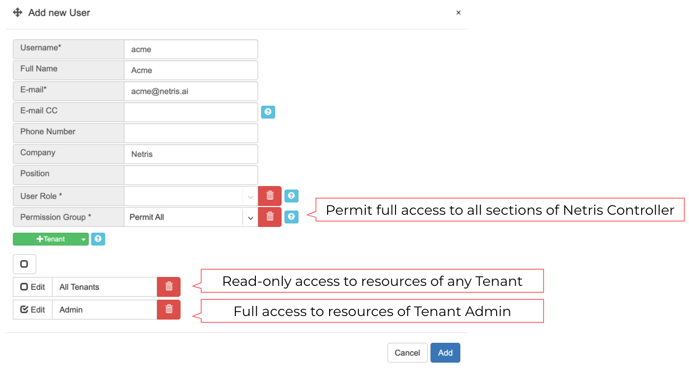
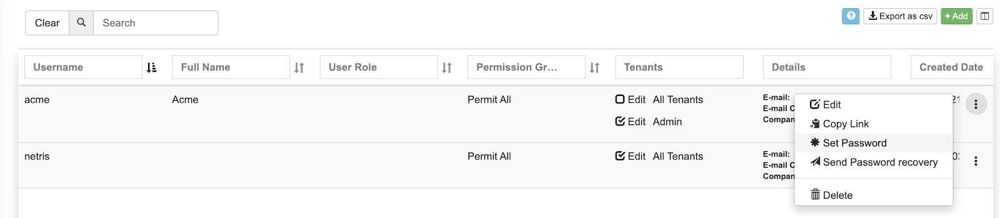
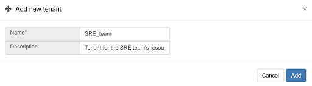
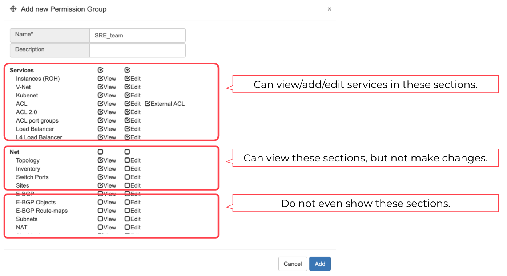
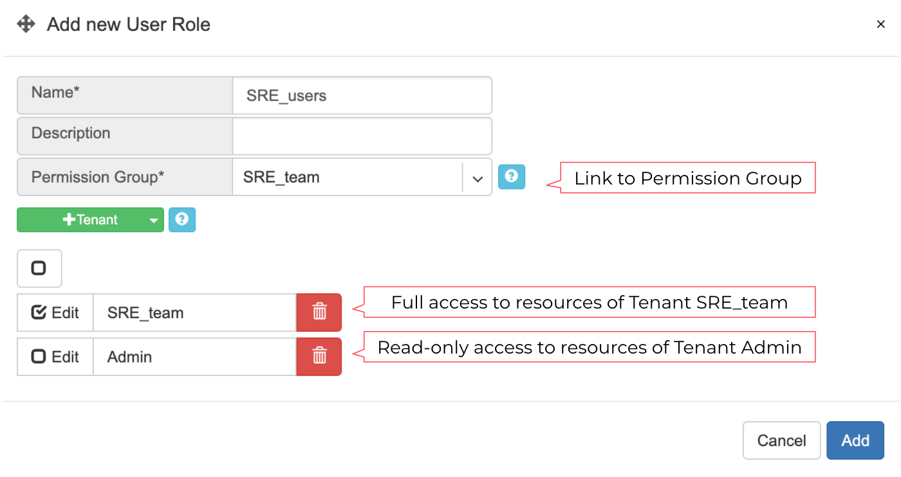

Accounts¶
The accounts section is for the management of user accounts, access permissions, and tenants.
Users¶
Description of User account fields:
Username - Unique username.
Full Name - Full Name of the user.
E-mail - The email address of the user. Also used for system notifications and for password retrieval.
E-mail CC - Send copies of email notifications to this address.
Phone Number - User’s phone number.
Company - Company the user works for. Usually useful for multi-tenant systems where the company provides Netris Controller access to customers.
Position - Position within the company.
User Role - When using a User Role object to define RBAC (role-based access control), Permissions Group and Tenant fields will deactivate.
Permission Group - User permissions for viewing and editing parts of the Netris Controller. (if User Role is not used)
+Tenant - User permissions for viewing and editing services using Switch Port and IP resources assigned to various Tenants. (if User Role is not used)
Example: Creating a user with full access to all sections of Netris Controller, read-only access to resources managed by any Tenant, and full access to resources assigned to the Tenant Admin.

Password: To set a password or email the user for a password form, go to the listing of usernames and click the menu on the right side.
Example: Listing of user accounts.

Tenants¶
IP addresses and Switch Ports are network resources that can be assigned to different Tenants to have under their management. Admin is the default tenant, and by default, it owns all the resources. The concept of Tenants can be used for sharing and delegation of control over the network resources, typically used by network teams to grant access to other teams for requesting & managing network services using the Netris Controller as a self service portal or programmatically (with Kubernetes CRDs) as part of DevOps/NetOps pipeline.
A Tenant has just two fields, the unique name and custom description.
Example: Adding a tenant.

Permission Groups¶
Permission Groups are a list of permissions on a per section basis that can be attached individually to a User or a User Role. Every section has a View and Edit attribute. The view defines if users with this Permission Group can see the particular section at all. Edit defines if users with this Permission Group can edit services and policies in specific sections.
Example: Permission Group.

User Roles¶
Permission Groups and Tenants can be either linked directly to an individual username or can be linked to a User Role object which then can be linked to an individual username.
